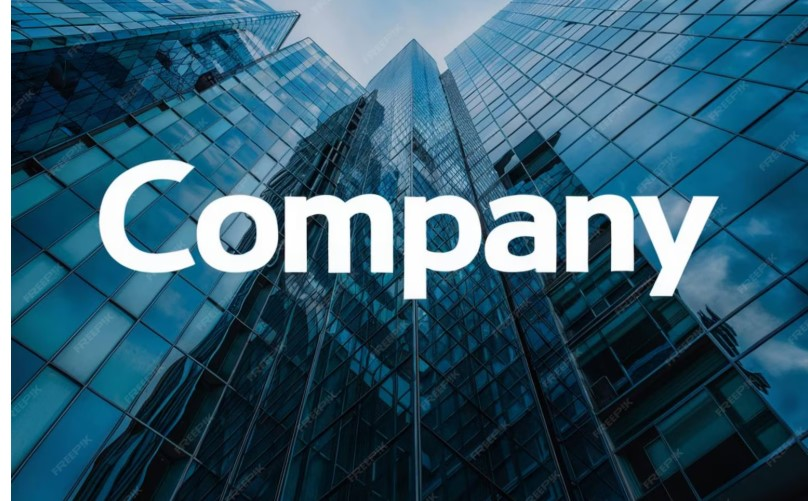

At Johnsond, we are passionate about providing thrilling and unforgettable rafting experiences. Our team of experienced guides is dedicated to ensuring your safety and enjoyment on the water.

At Johnsond, we are passionate about providing thrilling and unforgettable rafting experiences. Our team of experienced guides is dedicated to ensuring your safety and enjoyment on the water.

JohnsonDoubeni Ltd was founded with a vision to provide reliable, innovative, and high-quality services that meet the evolving needs of modern clients. Established with a strong commitment to excellence and integrity, the company began as a small venture driven by passion, determination, and a desire to make a meaningful impact.
From its early days, JohnsonDoubeni Ltd focused on building trust and delivering value, steadily growing its reputation through consistent performance and customer satisfaction. Over time, the company expanded its operations, embracing new technologies and adapting to industry trends to remain competitive and relevant.
Today, JohnsonDoubeni Ltd stands as a forward-thinking organization dedicated to continuous improvement, professionalism, and long-term success. With a foundation rooted in hard work and vision, the company continues to grow while maintaining its core values of quality, reliability, and innovation.